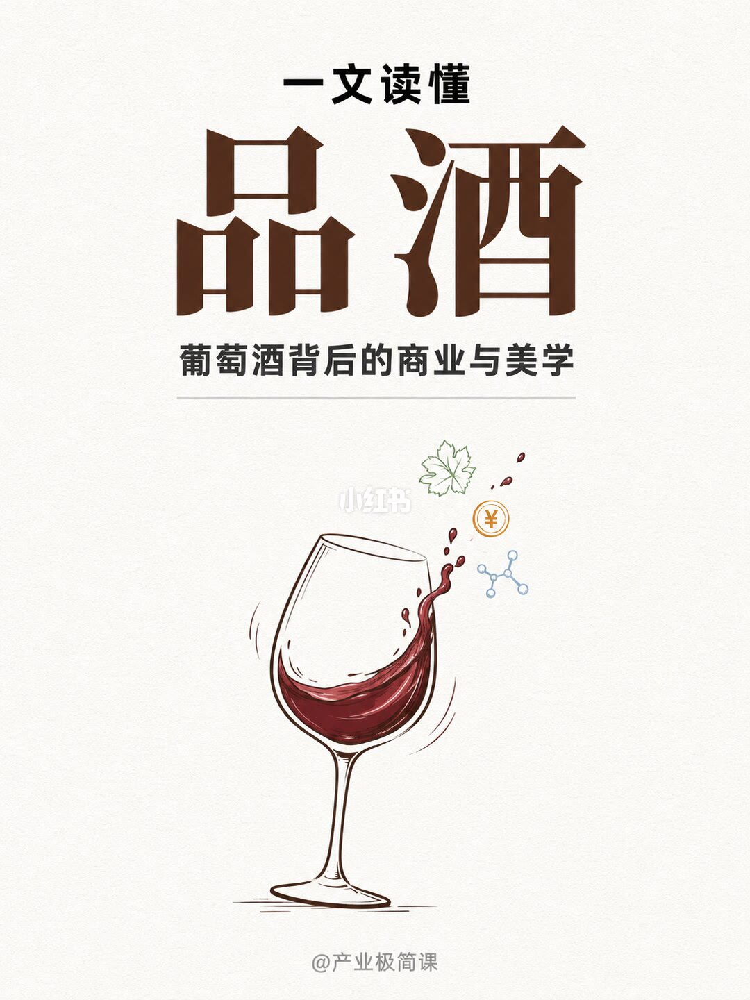
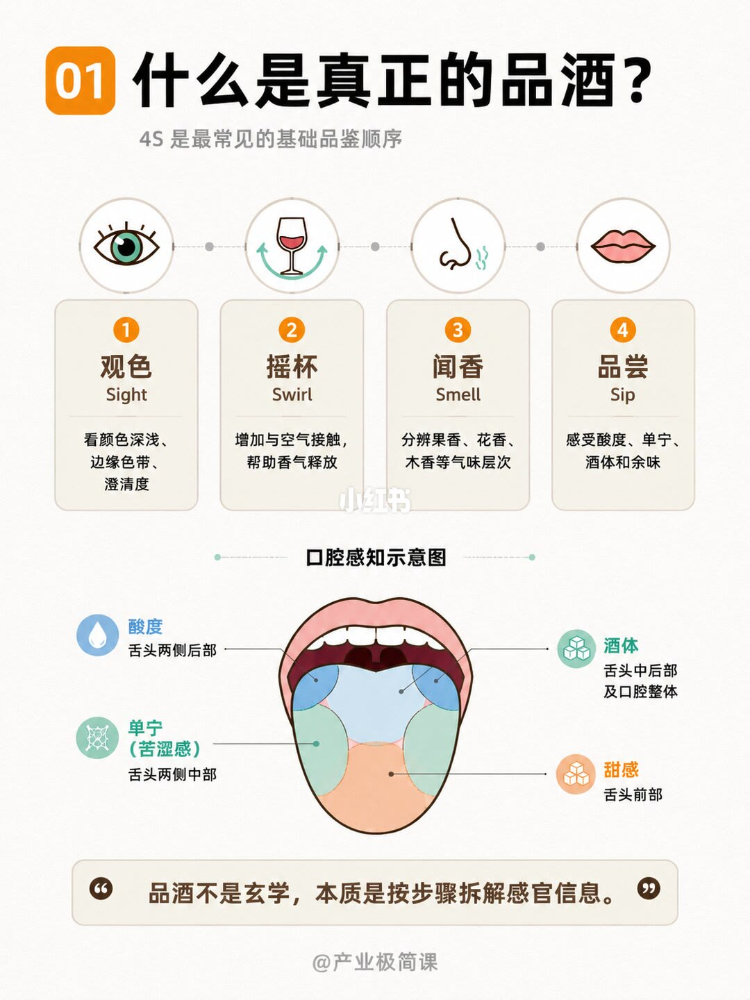
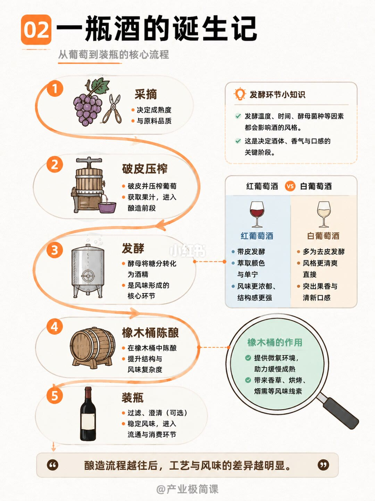
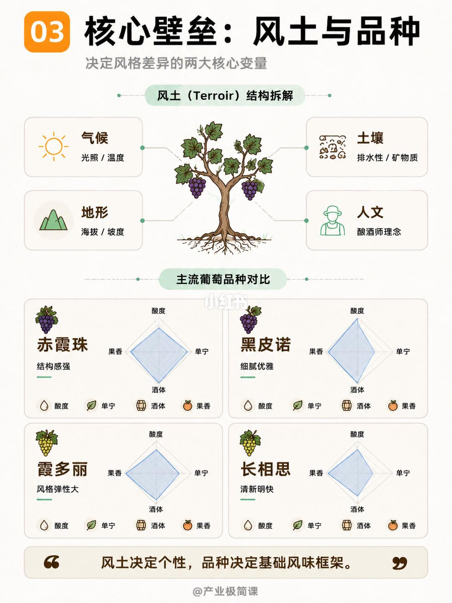
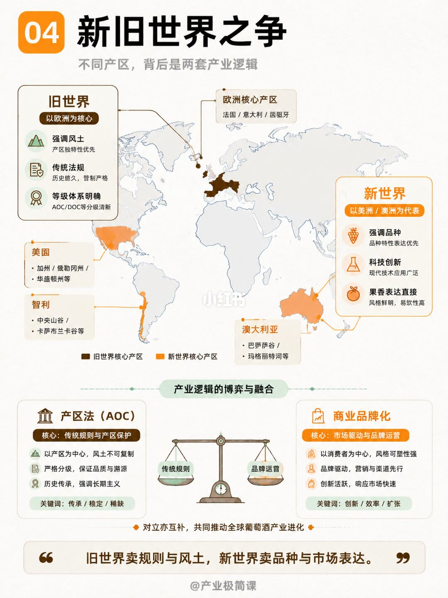
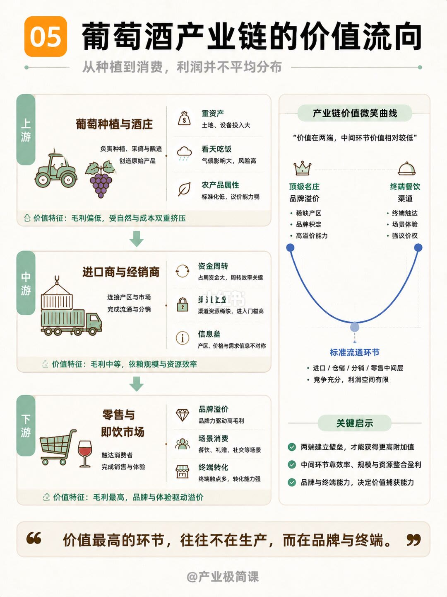
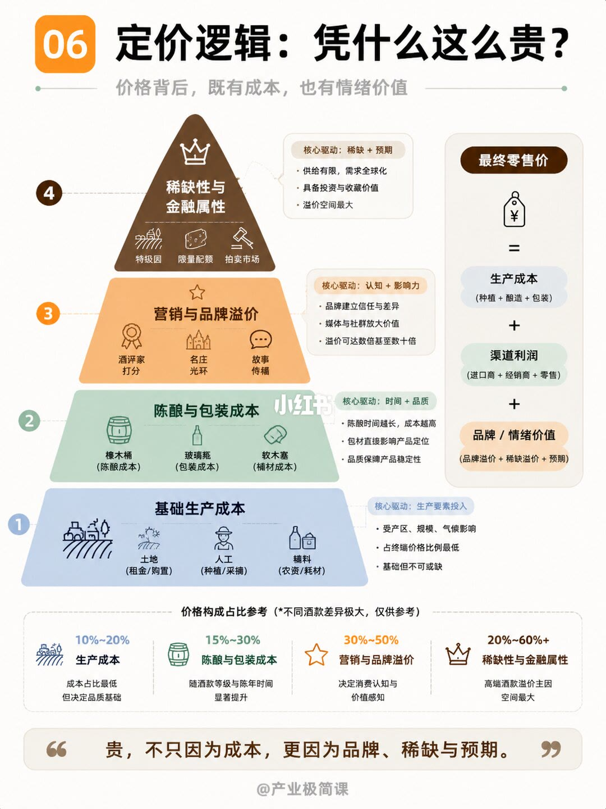
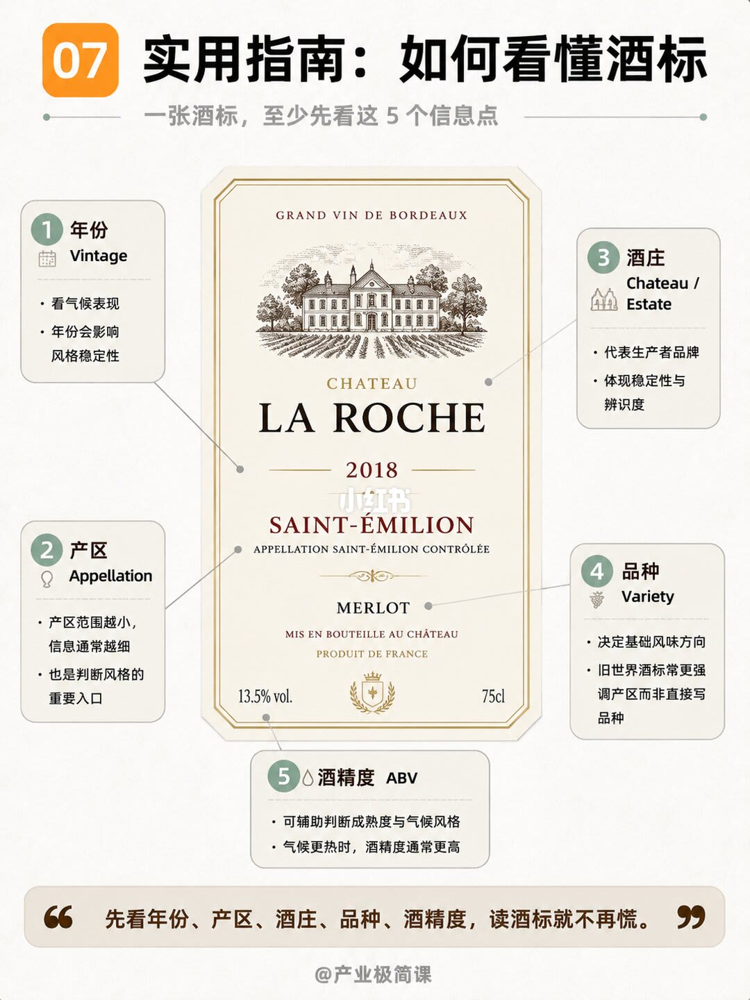
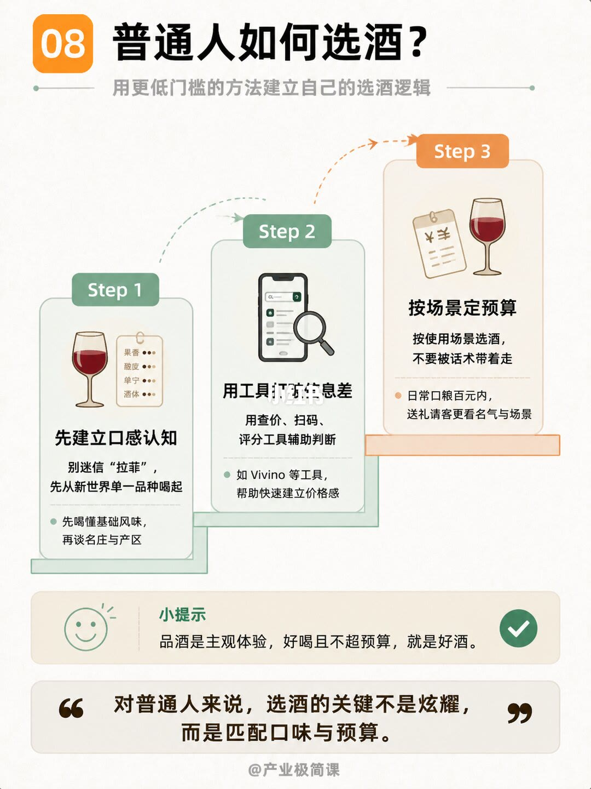
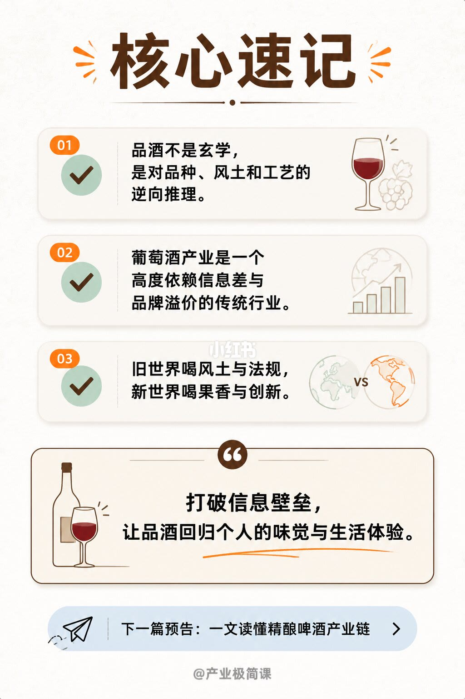

图文实录 · 小红书 · 产业极简课
一文读懂：品酒！葡萄酒背后的商业与美学
品酒在这套图里被收成可拆的感官步骤：观色、摇杯、闻香、品尝。一瓶酒贵不贵，则被拆成生产成本、渠道利润，再加上品牌、稀缺和预期。旧世界卖产区规则与风土，新世界卖品种与市场表达；普通人选酒先对口味和预算，不先对名庄。
1/10
封面：品酒，以及商业与美学

页顶小字是「一文读懂」。中间大字是「品酒」，横线下面是「葡萄酒背后的商业与美学」。画面中央是一只倾斜的酒杯，红酒在杯里打转，右侧溅出几滴。酒滴旁边有葡萄叶、酒滴、写着 ¥ 的圆点，以及一个分子结构简图。页脚是 @产业极简课。
2/10
真正的品酒：四步，再对到口腔

画面页标 01。标题「什么是真正的品酒？」。副题「4S 是最常见的基础品鉴顺序」。四格从左到右：观色，看颜色深浅、边缘色带、澄清度；摇杯，增加与空气接触，帮助香气释放；闻香，分辨果香、花香、木香等气味层次；品尝，感受酸度、单宁、酒体和余味。四格上方的英文分别是 Sight、Swirl、Smell、Sip。
下半页标题「口腔感知示意图」。酸度标在舌头两侧后部；单宁（苦涩感）标在舌头两侧中部；酒体标在舌头中后部及口腔整体；甜感标在舌头前部。页底一句：「品酒不是玄学，本质是按步骤拆解感官信息。」
3/10
从葡萄到装瓶的五步

画面页标 02。标题「一瓶酒的诞生记」。副题「从葡萄到装瓶的核心流程」。左侧五步：采摘，决定成熟度与原料品质；破皮压榨，破皮并压榨葡萄，获取果汁，进入酿造前段；发酵，酵母将糖分转化为酒精，是风味形成的核心环节；橡木桶陈酿，在橡木桶中陈酿，提升结构与风味复杂度；装瓶，过滤、澄清（可选），稳定风味，进入流通与消费环节。
右侧「发酵环节小知识」写：发酵温度、时间、酵母菌种等因素都会影响酒的风格，这是决定酒体、香气与口感的关键阶段。红葡萄酒写带皮发酵，萃取颜色与单宁，风味更浓郁、结构感更强。白葡萄酒写多为去皮发酵，风格更清爽直接，突出果香与清新口感。橡木桶的作用写两条：提供微氧环境，助力缓慢成熟；带来香草、烘烤、烟熏等风味线条。页底：「酿造流程越往后，工艺与风味的差异越明显。」
4/10
风土四项，四个品种各一句

画面页标 03。标题「核心壁垒：风土与品种」。副题「决定风格差异的两大核心变量」。上半页「风土（Terroir）结构拆解」四项：气候是光照 / 温度；土壤是排水性 / 矿物质；地形是海拔 / 坡度；人文是酿酒师理念。
下半页「主流葡萄品种对比」。四个雷达图共用酸度、单宁、酒体、果香四个轴，图例是水滴、叶子、木桶、果实。图上没有刻度数字。赤霞珠旁边写「结构感强」；黑皮诺写「细腻优雅」；霞多丽写「风格弹性大」；长相思写「清新明快」。霞多丽和长相思是白葡萄品种，雷达图上单宁轴贴着中心，红葡萄两个品种的单宁轴拉开。页底：「风土决定个性，品种决定基础风味框架。」
5/10
旧世界卖规则，新世界卖表达

画面页标 04。标题「新旧世界之争」。副题「不同产区，背后是两套产业逻辑」。旧世界写以欧洲为核心，欧洲核心产区列出法国、意大利、西班牙。三条是：强调风土，产区独特性优先；传统法规，历史悠久，管制严格；等级体系明确，AOC/DOC 等分级清晰。新世界写以美洲 / 澳洲为代表。地图上的例子：美国写加州 / 俄勒冈州 / 华盛顿州等；智利写中央山谷 / 卡萨布兰卡谷等；澳大利亚写巴罗萨谷 / 玛格丽特河等。三条是：强调品种，品种特性表达优先；科技创新，现代技术应用广泛；果香表达直接，风格鲜明，易饮性高。
中间一句是「产业逻辑的博弈与融合」，天平两边是传统规则和品牌运营，下面写对立亦互补，共同推动全球葡萄酒产业进化。左栏「产区法（AOC）」核心是传统规则与产区保护：以产区为中心，风土不可复制；严格分级，保证品质与溯源；历史传承，强调长期主义。关键词：传承 / 稳定 / 稀缺。右栏「商业品牌化」核心是市场驱动与品牌运营：以消费者为中心，风格可塑性强；品牌驱动，营销与渠道先行；创新活跃，响应市场快速。关键词：创新 / 效率 / 扩张。页底：「旧世界卖规则与风土，新世界卖品种与市场表达。」
6/10
利润不平均：两端高，流通低

画面页标 05。标题「葡萄酒产业链的价值流向」。副题「从种植到消费，利润并不平均分布」。左列三段。上游「葡萄种植与酒庄」：负责种植、采摘与酿造，创造原始产品。特点是重资产（土地、设备投入大）、看天吃饭（气候影响大，风险高）、农产品属性（标准化低，议价能力弱）。价值特征：毛利偏低，受自然与成本双重挤压。中游「进口商与经销商」：连接产区与市场，完成流通与分销。特点是资金周转、渠道准入、信息差（产区、价格与需求信息不对称）。价值特征：毛利中等，依赖规模与资源效率。下游「零售与即饮市场」：触达消费者，完成销售与体验。特点是品牌溢价、场景消费（餐饮、礼赠、社交等场景）、终端转化。价值特征：毛利最高，品牌与体验驱动溢价。
右侧「产业链价值微笑曲线」写「价值在两端，中间环节价值相对较低」。左峰是顶级名庄：稀缺产区、品牌积淀、高溢价能力。右峰是终端餐饮渠道：终端触达、场景体验、强议价权。谷底是标准流通环节：进口 / 仓储 / 分销 / 零售中间层，竞争充分，利润空间有限。关键启示三条：两端建立壁垒，才能获得更高附加值；中间环节靠效率、规模与资源整合盈利；品牌与终端能力，决定价值捕获能力。页底：「价值最高的环节，往往不在生产，而在品牌与终端。」
7/10
贵，拆成成本、渠道和预期

画面页标 06。标题「定价逻辑：凭什么这么贵？」。副题「价格背后，既有成本，也有情绪价值」。金字塔从下到上四层。基础生产成本：土地（租金 / 购置）、人工（种植 / 采收）、辅料（农资 / 耗材）；核心驱动是生产要素投入；受产区、规模、气候影响；占终端价格比例最低，基础但不可或缺。陈酿与包装成本：橡木桶、玻璃瓶、软木塞；核心驱动是时间 + 品质；陈酿时间越长成本越高，包材影响定位，品质保障产品稳定。营销与品牌溢价：酒评家打分、名庄光环、故事传播；核心驱动是认知 + 影响力；品牌建立信任与差异，媒体与社群放大价值；图上写溢价可达数倍甚至数十倍。顶层稀缺性与金融属性：特级园、限量配额、拍卖市场；核心驱动是稀缺 + 预期；供给有限、需求全球化，具备投资与收藏价值，溢价空间最大。
右侧公式：最终零售价 = 生产成本（种植 + 酿造 + 包装）+ 渠道利润（进口商 + 经销商 + 零售）+ 品牌 / 情绪价值（品牌溢价 + 稀缺溢价 + 预期）。底下「价格构成占比参考」注明不同酒款差异极大，仅供参考：生产成本 10%–20%，成本占比最低但决定品质基础；陈酿与包装成本 15%–30%，随酒款等级与陈年时间显著提升；营销与品牌溢价 30%–50%，决定消费认知与价值感知；稀缺性与金融属性 20%–60%+，高端酒款溢价主因，空间最大。页底：「贵，不只因为成本，更因为品牌、稀缺与预期。」
8/10
酒标先看五个信息点

画面页标 07。标题「实用指南：如何看懂酒标」。副题「一张酒标，至少先看这 5 个信息点」。中间是一张示例酒标，可见文字包括 GRAND VIN DE BORDEAUX、CHATEAU LA ROCHE、2018、SAINT-ÉMILION、APPELLATION SAINT-ÉMILION CONTRÔLÉE、MERLOT、MIS EN BOUTEILLE AU CHÂTEAU、PRODUIT DE FRANCE、13.5% vol.、75cl。这是图上的示意标签，笔记没有把它写成推荐购买的酒庄。
五个箭头：年份，看气候表现，年份会影响风格稳定性；产区，产区范围越小，信息通常越细，也是判断风格的重要入口；酒庄，代表生产者品牌，体现稳定性与辨识度；品种，决定基础风味方向，并写旧世界酒标常常更强调产区，而非直接写品种；酒精度，可辅助判断成熟度与气候风格，气候更热时酒精度通常更高。页底：「先看年份、产区、酒庄、品种、酒精度，读酒标就不再慌。」
9/10
普通人：口味、工具、场景

画面页标 08。标题「普通人如何选酒？」。副题「用更低门槛的方法建立自己的选酒逻辑」。Step 1 先建立口感认知：别迷信「拉菲」，先从新世界单一品种喝起；先喝懂基础风味，再谈名庄与产区。旁边核对表列出果香、酸度、单宁、酒体。Step 2 用工具打破信息差：用查价、扫码、评分工具辅助判断；举例 Vivino 等工具，帮助快速建立价格感。Step 3 按场景定预算：按使用场景选酒，不要被话术带着走；日常口粮百元内，送礼请客更看名气与场景。小提示：「品酒是主观体验，好喝且不超预算，就是好酒。」页底：「对普通人来说，选酒的关键不是炫耀，而是匹配口味与预算。」
10/10
三句速记，外加下一篇预告

标题「核心速记」。01：品酒不是玄学，是对品种、风土和工艺的逆向推理。02：葡萄酒产业是一个高度依赖信息差与品牌溢价的传统行业。03：旧世界喝风土与法规，新世界喝果香与创新。引语框：「打破信息壁垒，让品酒回归个人的味觉与生活体验。」底部浅蓝条是下一篇预告：一文读懂精酿啤酒产业链。页脚仍是 @产业极简课。
汇总
先拆感官，再拆价格
结论
这十页把「品酒」从玄学改成两套可核对的问题。喝的时候按观色、摇杯、闻香、品尝拆开，再把风味往品种、风土和工艺上倒推。买的时候把零售价拆成生产成本、渠道利润和品牌稀缺预期，并用年份、产区、酒庄、品种、酒精度读酒标。旧世界和新世界被写成两套卖法，产业链里更高的价值被放在顶级名庄和终端，而不是标准流通。对普通人，笔记的落点是口味匹配预算，好喝且不超预算就算好酒。
支撑页
- 第 1/10 页：题目是商业与美学，图标里同时有叶子、¥ 和分子。
- 第 2/10 页：4S 四步，以及酸度、单宁、酒体、甜感在示意图上的位置。
- 第 3/10 页：五步流程；红葡萄酒带皮发酵，白葡萄酒多为去皮发酵；过滤澄清写成可选。
- 第 4/10 页：风土四项和四个品种的形容词；雷达图没有刻度数字。
- 第 5/10 页：旧世界对产区法，新世界对商业品牌化，并列出图上的产区例子。
- 第 6/10 页：上中下游的毛利说法，以及微笑曲线的两端和谷底。
- 第 7/10 页：金字塔四层、零售价加法，以及四组仅供参考的占比区间。
- 第 8/10 页：示例酒标上的五个信息点，并提醒旧世界酒标常不直接写品种。
- 第 9/10 页：新世界单一品种入门、Vivino 一类工具、日常口粮百元内。
- 第 10/10 页：三句速记，把品酒收成逆向推理和个人体验。
边界
- 第 2/10 页的舌头分区是示意图上的标注。笔记没有给出实验或文献，不能把它当成味觉科学的定论。
- 第 4/10 页雷达图没有数字。只能引用图旁的「结构感强、细腻优雅、风格弹性大、清新明快」，不能补出酸度或单宁的分数。
- 第 5/10 页的产区是地图上的例子，后面都有「等」。笔记没有比较这些产区的酒价，也没有说它们代表该国全部酒。
- 第 6/10 页左列写上游毛利偏低，微笑曲线左峰又写顶级名庄高溢价。两句同时成立的范围不同：前一句说的是种植与酒庄这一大类，后一句说的是名庄这一小类。不能读成「所有酒庄都不赚钱」或「所有生产环节都最赚钱」。
- 第 7/10 页四组百分比加起来可以超过 100%，标题已写差异极大、仅供参考。它们不是同一瓶酒的分账表，也不能当成某一价位的报价。
- 第 8/10 页的 CHATEAU LA ROCHE、2018、圣埃美隆、梅洛、13.5% vol.、75cl 是示例酒标上的字。笔记没有给出这张标签对应的真实酒款、评分或售价。
- 第 9/10 页「日常口粮百元内」是作者建议的预算口径，不是行情统计。「别迷信拉菲」只否定把名庄当入门口令，没有评价任何一瓶拉菲。
- 第 3/10 页橡木桶、第 7/10 页陈酿成本，都没有说每一瓶红酒都必须过桶。白葡萄酒「多为」去皮发酵，本身就留了例外。